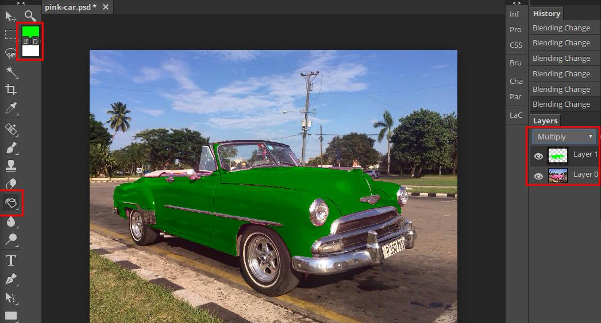
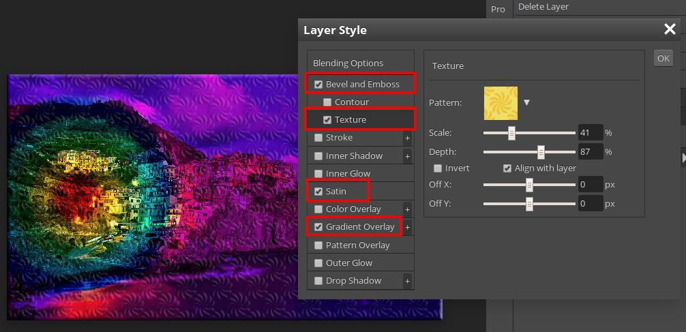

Layers are an important part of advanced image editing.
It is beneficial to liken an image to a cake in that additional layers
can enhance it add to how good the cake is. A cake can have: one layer
(e.g. a plain sponge), two (e.g. a plain sponge with jam on top), three
(e.g. a sponge with jam on top and another sponge layer on top of that),
or many (e.g. a sponge cake made up of two sponge layers with jam and
whipped cream in between topped with more cream and slices of
Kiwifruit!).
Below are some examples of using layers.
Sepia image: An old black and white image that has a
sepia effect applied using an orangish/brownish coloured layer on top
of it, with a blending mode set to "Overlay".
A sepia image showing the two layers involved with the top one's
blending mode set to Overlay
Colour replacement: A pink coloured car whose body
work is turned to green. Steps involved:
The pink colour has been selected with the Magic Wand set on "Add
to" mode.
A new empty layer has been added and positioned above the layer
with the pink car on it.
The new layer has been clicked to make it the active layer.
The foreground colour in the edit tools menu has been set to
green.
The paint pot tool has been used to fill the selection (on the new
layer)
The blending mode for the top layer has been set to multiply.

Note in the layers dialog the two thumbnails that show the
original colour, the selection filled with green, and the
"Multiply" blending mode.
Strengthening a faded image: Before and after images
of a photo of South Georgia whalers that has been edited to show
greater definition. Steps involved:
Duplicate original layer.
Set blending mode of top layer to multiply.
Original image.
Strengthening an old faded image. Note that the hills are better
defined, though a lot of the image is darker and will need further
processing.
Multi-layer image: This image is quite garish but it
shows how several layers and adjustments can be used to create an
interesting image. Here is an explanation of how the final image was
arrived at:
"Layer 2" was created by applying a radial blue/orange gradient to
an otherwise empty layer. The layer is selected, as can be seen by
its slightly darker background, and a blending mode of "Pin Light"
is applied to it. As the blue "mountain and moon" scene layer
(Layer 1) is below it, it will be effected by the blending mode.
"Layer 0" has had the blue sky above the hills selected using the
Magic Wand and the selected pixels have been deleted. This allows
the composite effect of the layers below this one to show through
the transparent part of the image. In addition, Layer 0's
saturation has been "cranked right up" and this results in an
over-saturated lake and flamingoes scene.
A composite image made up of several layers
Basic Operations
Introduction
When an image is opened it opens as one layer. This can be seen in the
layers dialog, which is on the right-hand side of Photopea. The dialog
will be named Layer 0 by default. The name can be
changed by double-clicking on it and typing in the new name. If working
with several layers it is a good idea to name them using descriptive
names. Each layer has a thumbnail as well as a name. The thumbnail gives
a good indication of what is on the layer. However, a text layer is
different in that a big T replaces the thumbnail and the name of the
layer is a truncated version of the text on the layer.
Creating and Deleting Layers
Creating a new layer can be done in several ways. Here are the three
most common.
Click the New Layer button. It has an icon that looks like a piece of
paper with a turned up edge, and is at the bottom right corner of
Photopea. The new layer will be created and placed above the currently
selected one and will be transparent. This is indicated by the layer's
thumbnail, which has a checkerboard pattern. Note the buttons/icons in
the same group as the New Layer one. They enable other layer
operations such as deletion of the selected layer. Hover over an icon
and a descriptive tool tip will pop up.
Right-click on an existing layer and choose "Duplicate" from the menu
that pops up. This will copy the layer and position the copy on top.
Copying and pasting a selection. A new layer can be made from a
selection by copying and pasting it. This can be done by going: 1)
Select->All, 2) Edit->Copy, 3) Edit->Paste OR by using the key
combinations Ctrl+c then Ctrl+v The new layer will be on top of the
layer that the selection was active on and the selections, original
and copied, will be aligned. The two images below show 1) the
selection copied and 2) the selection moved. Note that the layer with
the copied selection on it is likely to have transparent areas in it
as well.
A new layer made by copying and pasting a selection
A new layer made by copying and pasting a selection which has been
subsequently moved.
Deleting a layer can be done by clicking on the layer
to select it, then by either clicking the rubbish bin icon or
right-clicking and choosing delete from the pop-up menu.
Right-clicking on a layer brings up the context menu. Amongst other
operations, the layer can be Deleted or Duplicated. The New Layer and
Delete Layer buttons are at bottom right.
Moving Layers
When looking at a layered image what you see is the image arranged from
the top layer downwards. It is often necessary to rearrange layers to
get the effect that you desire. A layer's position can be changed by
clicking and dragging on it.
Layer Effects
When a layer is active (i.e. selected by clicking on its thumbnail with
the mouse) any operation, such as making a selection, applying a
transform, or using the paint brush, will effect that layer only. It is
a common error to be working on the wrong layer. If this occurs you can
use the history feature to undo undesired changes. In the layers dialog
several effects can be applied to a layer. These are:
Change opacity or transparency i.e. make the layer more see-through
Apply a
blending mode
so the pixels on the layer will change according to how they interact
with the pixels on the layer below it. The most commonly used blends
are multiply, overlay and screen. Multiply works by darkening a pixel
if there is a corresponding dark pixel below it. This blend is often
used to increase the definition of old faded images, and is done by
duplicating the original layer and setting the blend mode to Multiply
for the top one. Overlay and Screen can be used for old pictures as
well to bring out detail and also to add a colour overlay such as a
sepia effect. The opacity of the layer can be adjusted to fine-tune
the blend effect.
Layer Styles. To open the Layer Style dialog right-click on a layer
and choose "Blending Options" from the pop-up menu that appears. There
are many options and each has its own set of adjustments. The image
below shows several applied to an image. The styles can be adjusted at
any time by right-clicking on a layer and opening the dialog again.

The layer styles dialog showing the settings for "Texture".
Adjustment Layers and Masks
We will not be covering Adjustment Layers and Masks in the course as
they are quite advanced. Adjustment layers are special types of layers
that sit above the layer that needs adjusting. An adjustment, such as
Black and white, is applied to the adjustment layer rather than the
layer below it. In this way the "original" layer is left intact. Mask
layers are special in that an effect or adjustment can be made then the
mask can be painted on using a black, grey or white colour to remove,
partially remove, or entirely remove the effect. The image below has
been desaturated using the Black and white adjustment layer and then the
mask has been painted on to remove some of the blurring.
The Black and white adjustment layer showing the mask being painted on
to reveal the images colour.